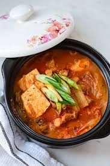

Kimchi Jjigae Recipe

Description
Kimchi Jjigae, sometimes written as kimchi chigae, is a classic Korean spicy stew made with napa cabbage kimchi, meat (usually pork belly), and tofu. It’s a robust dish perfect for cold months.
The stew is full of flavor: spicy, sour, salty, savory, and sweet. The old, sour kimchi—traditional Korean fermented napa cabbage—gives a whole dimension of deep flavors to this dish.
Ingredients
- Napa cabbage kimchi – The well-fermented, old, sour kimchi is the best! Fresh kimchi doesn’t yield much flavor, so it’s not suited for this recipe.
- Anchovy stock – You can use water or other broth, but I like to stick to the authentic flavor as much as possible. Plus, anchovy stock is super easy to make!
- Pork belly slices – You can use other proteins like seafood or other types of meat, but a slab of fatty pork belly is a great choice.
- Tofu – I use medium firm tofu, but soft tofu is okay to use. Just be careful not to break into small pieces when you serve/mix the stew.
- Garlic
- Green onions
- Roasted sesame oil
- Seasonings: sake, soy sauce, sugar, gochujang Korean chili paste, and gochugaru Korean pepper flakes – If you never made Korean food, these ingredients may be unfamiliar. However, the duo are the must-haves for making many Korean dishes. Once you start using them, you’ll discover their versatility and will enjoy using them in spicing up your food.
Steps
- Start making the anchovy stock at least 30 minutes prior to cooking. You can also soak the anchovies overnight.
- Prepare the ingredients by cutting the pork belly, tofu, and green onion.
- Stir fry the pork belly until it is no longer pink.
- Add the kimchi and the seasonings. Cook for 15 minutes.
- Add the tofu and cook for 5 minutes. Serve hot!